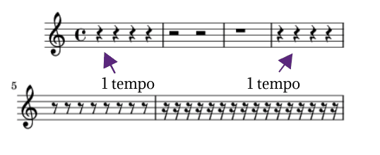

<section class="container-content">
    <div class="d-flex flex-column justify-content-around etapa1-texto ">
        <div>
            <h5>Por último, vamos relembrar os símbolos de pausa:</h5>
            <p>Abaixo, temos um exemplo que indica o tempo de pausa de cada símbolo.</p>
        </div>
        <div>
            
        </div>
    </div>
</section>

<div class="btn-etapas-container">
    <div class="btn-container">
        <button id="btn-voltar-context" onclick="btnVoltarEtapas(conteudo_etapa10.etapa10Conteudo33, 10)" class="btn selecao-etapas-btn" role="button">Voltar</button>
    </div>
    <div class="btn-container">
        <button id="btn-avancar-context" onclick="btnAvancar(conteudo_etapa10.etapa10Conteudo35, 10)" class="btn selecao-etapas-btn" role="button">Avançar</button>
    </div>
</div>